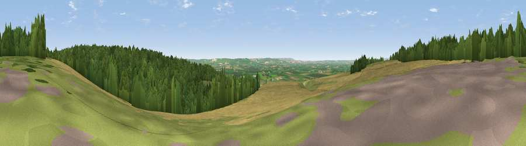

Viewpoint near Allerston
#13354 in England · top 27% of its area beats it · near Allerston · path 63 mWhere it is
The exact computed spot (SE 87475 84575). Click the marker for map links.
Public access: the nearest public right of way is about 63 m away — the final stretch may cross private land. Computed from Natural England's CRoW access layer and OpenStreetMap rights of way — not the legal definitive map. Always verify locally.
The view, rendered

A 360° render of this exact spot computed from the terrain model, tree cover and land cover — summer colours, afternoon light, calibrated against photographs of famous viewpoints. Real trees, hedges and buildings will differ in detail.
The panorama
Grey silhouette: terrain skyline in each direction (720 bearings, Earth curvature and refraction included). Dashed green: skyline with trees (+15 m) and buildings (+8 m) as obstacles. Blue strip: how far the ground is visible on each bearing.
Where the view opens
Wedge length = distance to the farthest visible ground on that bearing (vegetation-aware). Rings at 10, 25 and 50 km.
What fills the view
50% woodland · 35% cropland · 14% grassland
Angular shares of the visible panorama (visual magnitude), not map area. Landscape diversity 0.44 (0–1 Shannon).
Key numbers
More beautiful places nearby
The staircase of upgrades: each row has a higher view potential than everything closer. Driving times are estimates from straight-line distance, calibrated against real road routing — check an actual route before setting out.
| Place | Direction | Drive | Score |
|---|---|---|---|
| Viewpoint near Allerston | W · 1 km | ~4 min | 61.7 |
| Whinny Nab | N · 10 km | ~20 min | 64.9 |
| Viewpoint near West Heslerton | SSE · 10 km | ~20 min | 70.5 |
| Viewpoint near Scalby | ENE · 13 km | ~24 min | 73.4 |
| Seamer Beacon | ENE · 14 km | ~25 min | 76.9 |
| Viewpoint near Burniston | ENE · 14 km | ~25 min | 78.3 |
| Olivers Mount | E · 17 km | ~29 min | 80.3 |
| Viewpoint near Ravenscar | NNE · 19 km | ~33 min | 87.3 |
54.24939, -0.65898 · source: screening · position refined by local search. Computed location — check access rights before visiting.